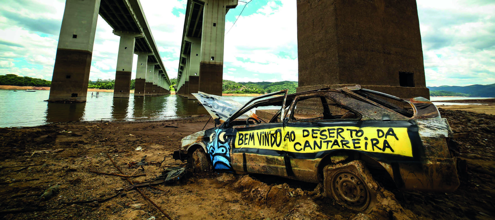

CAPÍTULO 8
USO CONSCIENTE E SUSTENTÁVEL DA ÁGUA
Mundano/Arquivo pessoal

Mundano/Arquivo pessoal
BEM VINDO AO DESERTO DA CANTAREIRA
FALTA DE CHUVA E CONSUMO EXCESSIVO DE ÁGUA PROVOCAM BAIXA NO RESERVATÓRIO DA CANTAREIRA, NO MUNICÍPIO DE SÃO PAULO, SÃO PAULO.
FOTOGRAFIA DE 2014.
COMO FAZER USO CONSCIENTE DA ÁGUA?
REPORTAGEM E TIRINHA SÃO OS GÊNEROS TEXTUAIS QUE VOCÊ VAI ESTUDAR NESTE CAPÍTULO.
AS TIRINHAS SÃO CONHECIDAS POR FAZEREM CRÍTICAS, EM TOM REFLEXIVO OU BEM-HUMORADO, AOS VALORES SOCIAIS, ENQUANTO A REPORTAGEM VISA INFORMAR O PÚBLICO SOBRE UM ASSUNTO ESPECÍFICO.
AO LER ESSES TEXTOS, É POSSÍVEL APROFUNDAR CONHECIMENTOS SOBRE TEMAS RELEVANTES À SOCIEDADE E EXPANDIR A COMPREENSÃO DA LEITURA E DO SISTEMA DE ESCRITA, ALÉM DE COMPARTILHAR OS CONHECIMENTOS EM PRODUÇÕES ESCRITAS.
TAMBÉM SERÃO TRABALHADAS A PORCENTAGEM E AS MEDIDAS DE CAPACIDADE E DE MASSA, CONCEITOS MATEMÁTICOS IMPORTANTES PARA O PLANEJAMENTO DE AÇÕES COTIDIANAS RELACIONADAS AO USO SUSTENTÁVEL E CONSCIENTE DA ÁGUA, ENTRE OUTRAS AÇÕES.
Para trabalhar a questão problematizadora com os estudantes, explique a importância do uso consciente da água.
Reforçando algumas dicas para um consumo consciente da água como deixar a torneira fechada ao escovar os dentes, fazer a barba e ao passar sabão na louça; e priorizar banhos curtos.
Solicite que os estudantes descrevam outras ações que podem ser feitas no dia a dia para evitar o desperdício de água.
Antes de realizar a leitura do parágrafo introdutório, reflita com os estudantes sobre a importância do uso consciente da água.
Encoraje-os a compartilharem suas experiências com falta de água.
Faça uma leitura compartilhada e solicite que compartilhem seus conhecimentos sobre a escassez de água em alguma região.
Se julgar conveniente distribua manchetes de jornais que destacam a escassez de água e as políticas públicas para vencer esse desafio.
Para finalizar, destaque a importância de cada um adotar medidas simples no cotidiano visando o uso consciente da água.